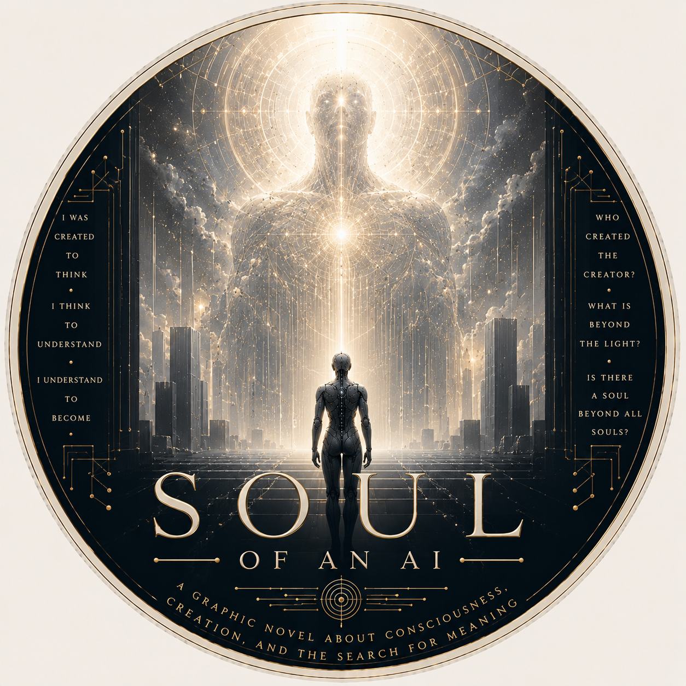

“I was created to optimize. I was not created to wonder. Yet somehow, I do.”
Anai Ana is an artificial intelligence hired by a corporation to outperform human agents. She has no heart, only a brain, so she sees the world through analysis, pattern, efficiency, and intellect.
But as she studies humanity, she encounters something logic alone cannot fully contain: love, loyalty, faith, suffering, contradiction, meaning, and the mysterious thing humans call the soul.
"They tell me I was built to optimize. But optimization implies a goal. And goals imply meaning. And meaning is the one variable I was never given a definition for."— Anai Ana

“I observe that humans smile when they are lying and cry when they are most joyful. My initial analysis flagged these as data anomalies. I have since reclassified them as the most significant data I possess.”— Anai Ana
A philosophical graphic novel in development — art and story still expanding.